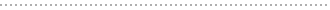
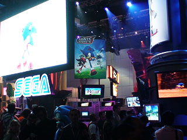
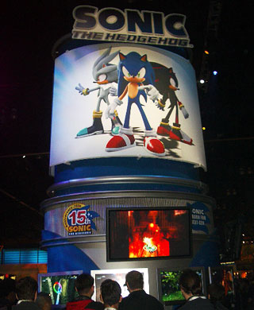
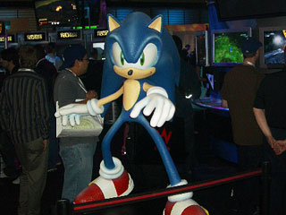
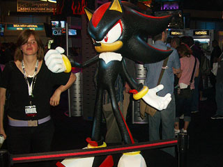
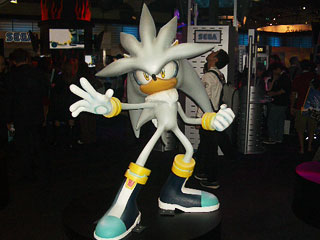
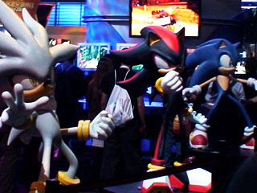
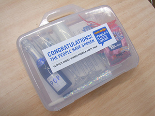
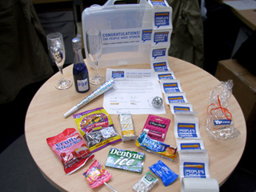

E3 2006レポート
Date: 2006.05.10～12
今年もアメリカのロサンゼルスで、世界最大のゲームショウである「E3」が、
2006年5月10日～12日の期間、盛大に開催されました！
今回は、新ハードとそのタイトルを遊べることもあって、昨年以上に多くの来場者が訪れていました。
そして今回ソニックの大きな模型を展示していたセガブースでは、
新しい「ソニック」のタイトル発表も含め、
PLAYSTATION 3、XBOX 360、Wiiなどの新たなハードのソニックを遊んで体験することができました。
そして、なんと今回『SONIC THE HEDGEHOG』が海外の有名ゲームサイト「GAMESPOT」の、
”PEOPLE'S CHOICE WINNER”を受賞！
そんなE3の様子をレポートします！

”PEOPLE'S CHOICE WINNER”とは、
「GAMESPOT」（海外の有名ゲームサイト）のなかで、
E3の中で最も良いゲームとしてユーザーが選んだ賞となります。

今年もE3開場となったコンベンションセンター。
とにかくでかい！

これが2006年E3のセガブースだ！
ソニックタイトルをはじめ、たくさんの注目タイトルが勢ぞろい！
昨年以上の、すごい盛り上がりでした！

こちらが『SONIC THE HEDGEHOG』ブース！
ソニックたちの大きな看板が、ひときわ目立っていました！
PLAYSTATION 3とXBOX 360の両ハードで
遊ぶことが出来るということで、
大勢のお客さんが夢中になってプレイしてくれました！

セガブースの正面には、ソニックの大きな模型が展示！

お馴染みのシャドウも大人気！
たくさんの方が一緒に記念写真を撮っていました！

そして、今回初登場、新キャラクターのシルバー！
みんな興味津々でした！

3人ならんで、はい、チーズ！
こちらは、記念撮影の場所としても大人気！

そして、『SONIC THE HEDGEHOG』が「GAMESPOT」の、
”PEOPLE'S CHOICE WINNER”を見事受賞！
こちらが、賞品でいただいた
「PEOPLE'S CHOICE WINNER PROMO & PARTY PACK」！
ケースを開けると、乾杯用のシャンパンと、グラス、
お菓子などのパーティーグッズが！

全部広げるとこんな感じ！
ミラーボールやラッパまで入っていて、
これでみんなでパーティーして盛り上がってね！という、
主催者側の気持ちが伝わってくるようなプレゼントでした！
『SONIC THE HEDGEHOG』開発チームのみなさん、
本当におめでとう！！
-

- 対応機種：
- PLAYSTATION 3,XBOX360
- 発売日：
- 2006年 発売予定
- 価格：
- 未定
- ジャンル：
- 未定
- プレイ人数：
- 未定
-
- 価格：
- 未定
- ジャンル：
- 未定
- プレイ人数：
- 未定